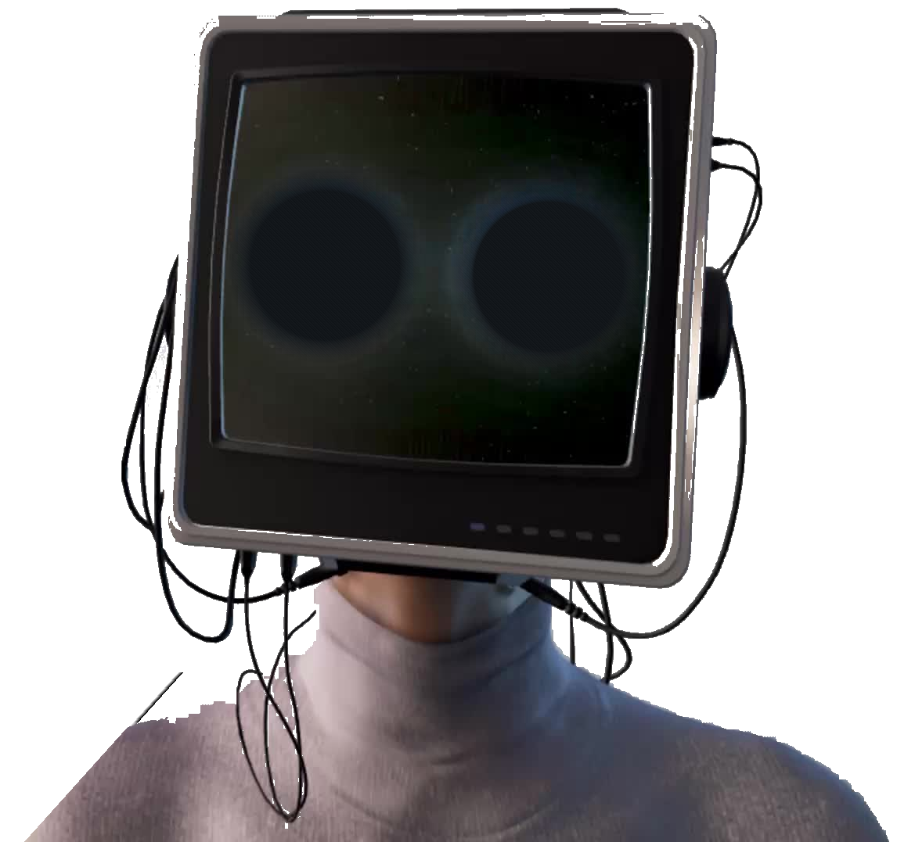

Nexus Ops Engine
SYSTEM / 88
Todo habla con todo.
Red técnica de liquidación instantánea para plataformas de recargas gamer y pasarelas de operaciones conectadas. Enrutamiento dinámico en malla con latencia sub-15ms.
MESH / CONECTADO ⚡ 12ms
